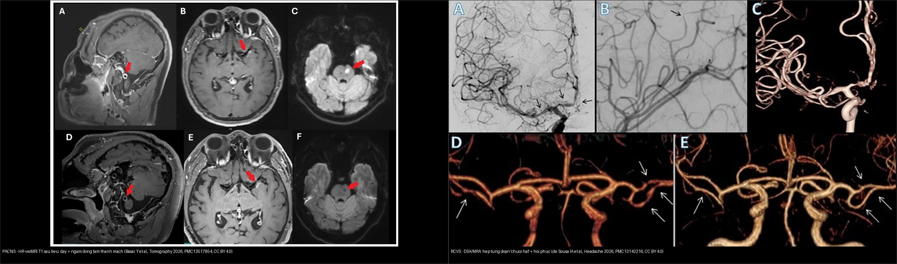
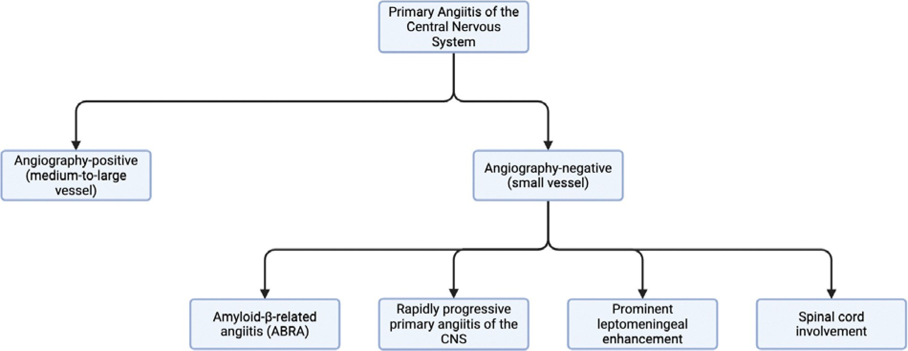
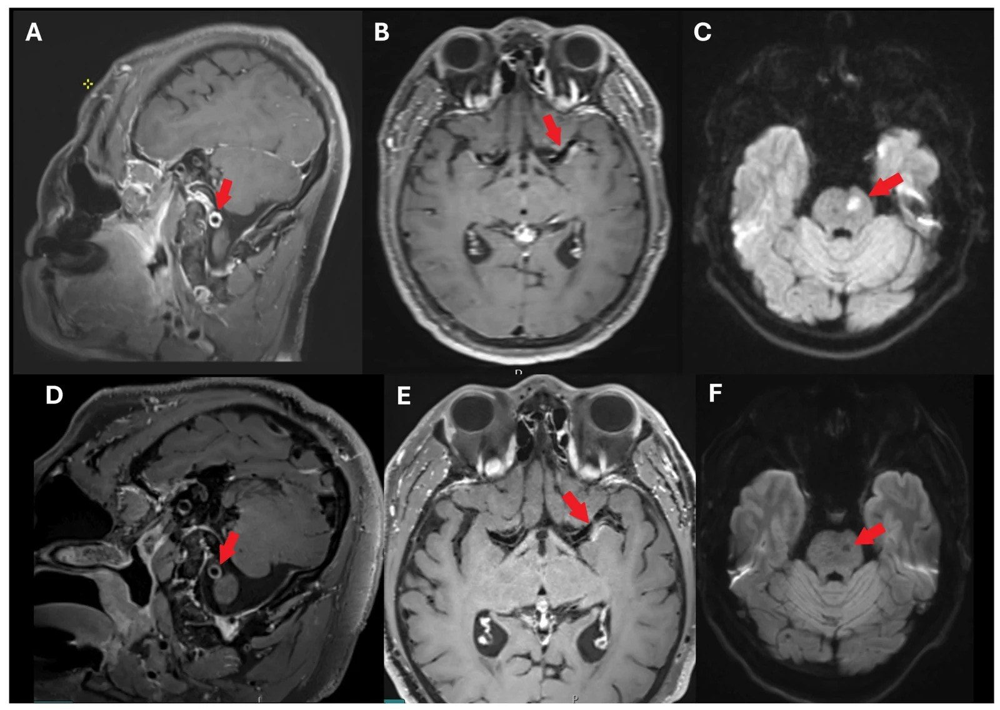
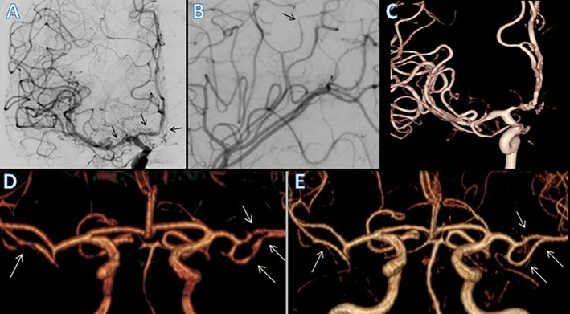
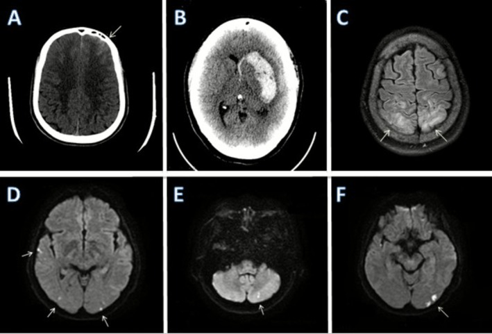
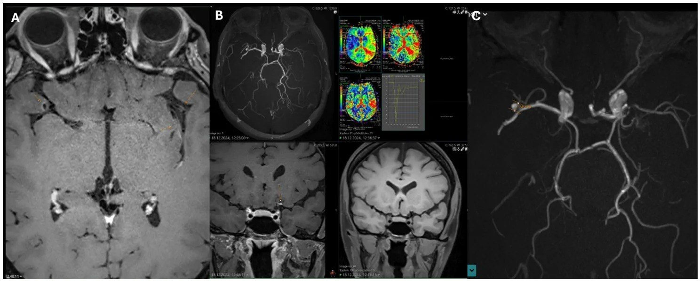

229 — Viêm mạch TKTW nguyên phát (PACNS) vs co mạch não có hồi phục (RCVS): hai bệnh "chồng lấp" nhưng điều trị NGƯỢC nhau / Primary angiitis of the CNS (PACNS) vs Reversible cerebral vasoconstriction syndrome (RCVS)
Tags: pattern:co-mach-nao pattern:viem-mach-nao vung:nao vung:mach-nao score:RCVS2 protocol:HR-vwMRI protocol:sinh-thiet-nao
Mức chắc chắn (certainty): tổng hợp y văn (literature synthesis) — nhóm tự biên từ y văn mở (JNNP 2025, Tomography 2026, Headache 2026, Ann Neurol 2025, Arch Intern Med Res 2026 CC BY/BY-NC); các ca trong quiz là ca nguyên văn (verbatim case) chép đúng tuổi – lâm sàng – chú thích gốc.
1. Tổng quan — bệnh học & cơ chế hình ảnh (TẠI SAO)
- PACNS (primary angiitis of the central nervous system — viêm mạch TKTW nguyên phát): viêm mạch mạch máu nhỏ và vừa của não–tủy mà KHÔNG có nguyên nhân toàn thân/viêm mạch ngoài não. Bệnh cảnh kinh điển: đau đầu âm ỉ tiến triển, thiếu hụt thần kinh khu trú tái diễn, suy giảm nhận thức, đột quỵ nhiều đợt khác lãnh thổ — chẩn đoán khó vì triệu chứng không đặc hiệu. Hai phân nhóm theo cỡ mạch (PMC13052826): bệnh mạch nhỏ (chẩn đoán sinh thiết não) vs bệnh mạch vừa–lớn (chẩn đoán chụp mạch/sinh thiết).
- RCVS (reversible cerebral vasoconstriction syndrome — co mạch não có hồi phục): đau đầu sét đánh (thunderclap headache) tái diễn + co mạch từng đoạn, đa ổ, tự hồi phục trong < 3 tháng. Sinh lý bệnh: yếu tố khởi phát → rối loạn chức năng nội mô + tăng hoạt giao cảm + stress oxy hóa → co mạch & hở hàng rào máu-não (BBB). Lịch sử: RCVS từng bị chẩn đoán nhầm là PACNS → điều trị ức chế miễn dịch oan (PMC13142216).
- TẠI SAO đọc được bản chất mô bằng vật lý (theo Argon):
- HR-vwMRI (high-resolution vessel wall MRI — MRI thành mạch độ phân giải cao), T1 sau tiêm gadolinium: viêm mạch → thành mạch dày + ngấm thuốc. PACNS: ngấm ĐỒNG TÂM, mạnh, đối xứng quanh lòng mạch (viêm xuyên toàn bộ thành). RCVS: ngấm RẤT NHẸ hoặc không ngấm (rối loạn trương lực cơ, không viêm thành) — đây là chốt phân biệt cơ chế. Ngấm lệch tâm + tái tạo dương lại là xơ vữa (atherosclerosis).
- T2/FLAIR: phù não mạch máu (vasogenic) → T2/FLAIR tăng, DWI âm + ADC TĂNG, ưu thế chất trắng dưới vỏ/vùng chuyển tiếp; DWI sáng + ADC tối = nhồi máu (phù độc tế bào). RCVS gây phù mạch máu kiểu PRES trong 8–38% ca.
- SWI/GRE: xuất huyết dưới nhện LỒI (convexity SAH)/xuất huyết nhu mô flower thành sắt từ → "blooming" — thường gặp trong RCVS, hỗ trợ chẩn đoán.
- Ngưỡng định lượng nằm lòng (mọi nhận định kèm số/phiên bản):
- PACNS (sinh thiết chứng minh, n=57, PMC12421100): thể bệnh học L-PACNS 65%, ABRA 16%, G-PACNS 14%, N-PACNS 5%; tuổi trung vị L 47 / ABRA 64,5 / G 37 / N 65 tuổi (p=0,008). Diễn tiến đơn pha ở L-PACNS (65%) và ABRA (75%) nhưng tái phát–lui bệnh ở nhóm khác.
- PACNS (cohort đa trung tâm, n=163, PMC12542311): tuổi trung vị 48 (39–59,5); 45% nữ; 18% tử vong, 52% kết cục xấu (mRS 3–6), 50% tái phát. Yếu tố tiên lượng xấu: tuổi (HR 1,96/10 năm), thời gian từ khởi phát đến chẩn đoán kéo dài (HR 1,01). Cyclophosphamide ± corticoid giảm tái phát: HR 0,44 / 0,47 so với không điều trị.
- PACNS tổng quan (PMC13052826): tử vong 8–23%, ~25% tàn phế nặng dù điều trị; thâm nhiễm tế bào T nhớ CD45R0+; điều trị tấn công corticoid + cyclophosphamide, duy trì MMF/rituximab/azathioprine/methotrexate; sinh thiết âm tính giả (false-negative) vì tổn thương từng đoạn.
- RCVS (tổng quan, PMC13142216): ~0,2/100.000 ca nhập viện ở Mỹ, ~75% là nữ; hẹp mạch hồi phục tự nhiên < 3 tháng; phù mạch máu hồi phục trong vài ngày; convexity SAH là dấu nhu mô hay gặp; điều trị: ngừng yếu tố khởi phát + nimodipine (khởi đầu < 7 ngày có thể giảm co mạch); tránh glucocorticoid (nguy cơ làm nặng/thiếu máu).
2. Mẫu hình + chẩn đoán phân biệt theo bối cảnh (Gamut)
- THEO BỆNH SỬ (chìa khóa đầu tiên):
- PACNS: đau đầu âm ỉ tăng dần theo tuần–tháng, suy giảm nhận thức, thiếu hụt thần kinh KÉO DÀI/tái diễn tích lũy, không có yếu tố khởi phát cấp; dịch não tủy (DNT) thường bất thường (tăng protein ± tăng tế bào lympho nhẹ).
- RCVS: đau đầu sét đánh TÁI DIỄN trong 1–4 tuần (đạt đỉnh, tự khỏi), có yếu tố khởi phát (thuốc co mạch cảm cúm/serotonin/triptan/ergot, hậu sản, Valsalva, chấn thương, truyền máu); thiếu hụt thoáng qua; DNT bình thường (trừ khi có SAH).
- THEO HÌNH ẢNH:
- Co mạch/hẹp đa ổ "chuỗi hạt": RCVS · xơ vữa nội sọ (ICAS) · bóc tách · moyamoya · viêm mạch hệ thống (NPSLE, Takayasu) · co mạch sau SAH · loạn sản cơ xơ (FMD).
- Ngấm + dày thành mạch đồng tâm: PACNS · viêm mạch do nhiễm trùng (VZV, lao, nấm) · bệnh mạch máu liên quan IgG4.
- Nhồi máu nhiều lãnh thổ + nhồi máu kèm nhồi máu: PACNS, xơ vữa, bệnh mạch nhỏ.
- Mnemonic yếu tố khởi phát RCVS (tự soạn): "SAD-VAN" — Serotonergic/cảm cúm · After birth (hậu sản) · Drugs (triptan, ergot, immunosuppressant) · Valsalva/gắng sức · Anemi/truyền máu · Nhiễm trùng/đối quang.
3. Bảng so sánh phân biệt (ma trận đối chiếu)
| Thực thể (entity) | Hình ảnh điển hình | Chốt vào (rule-in) | Chốt loại (rule-out) | Gợi ý xác nhận |
|---|---|---|---|---|
| PACNS | Nhiều nhồi máu nhỏ nhiều lãnh thổ (hạch nền/chất trắng sâu); HR-vwMRI: dày + ngấm ĐỒNG TÂM mạnh thành mạch; hẹp đa ổ đối xứng, ít gồ ghề | Bệnh sử tiến triển + DNT bất thường + HR-vwMRI ngấm đồng tâm mạnh + không yếu tố khởi phát cấp | Đau đầu sét đánh tái diễn + ngấm nhẹ/không ngấm + hồi phục < 3 tháng → RCVS | Sinh thiết não–màng não (tiêu chuẩn vàng, âm tính giả vì tổn thương từng đoạn); HR-vwMRI dẫn đường sinh thiết |
| RCVS | Hẹp từng đoạn đa ổ "chuỗi hạt" (hồi phục < 3 tháng); convexity SAH, xuất huyết nhu mô, phù kiểu PRES (8–38%); ngấm thành mạch nhẹ/không | Thunderclap tái diễn + yếu tố khởi phát + co mạch đa ổ + ngấm nhẹ (RCVS2 ≥ 5 / RCVS-TCH ≥ 7) | Hẹp một mạch, không hồi phục > 3 tháng, ngấm mạnh đồng tâm → PACNS/viêm mạch | MRA/CTA + lặp lại 2–3 tuần; CE-FLAIR hở BBB; DSA |
| Xơ vữa nội sọ (ICAS) | Hẹp lệch tâm, tái tạo dương, mảng xơ vữa ngấm lệch tâm; không hồi phục | HR-vwMRI: mảng lệch tâm + tái tạo dương + ngấm thành từng ổ | Ngấm đồng tâm mạnh + hồi phục → RCVS/PACNS | HR-vwMRI (T2 + T1 sau tiêm), theo dõi ≥ 1 năm |
| Bóc tách động mạch nội sọ | Vạt nội mạc (intimal flap) + máu tụ thành mạch; thường MỘT mạch | Vạt nội mạc (42–91%) hoặc máu tụ thành mạch (23–61%) | Co mạch đa ổ đối xứng, động học → RCVS | HR-vwMRI + CTA/MRA; theo dõi động học |
| Co mạch sau SAH phình mạch | Co mạch quanh vị trí chảy máu, một bên, đỉnh ngày 4–14 | SAH bể nền/khe Sylvius + co mạch cùng bên tương xứng lượng máu | SAH LỒI (convexity) + co mạch đa ổ không tương xứng → RCVS | CT/DSA + tìm phình mạch; xanthochromia DNT |
| Moyamoya | Hẹp đoạn tận ĐM cảnh trong HAI BÊN + "khói thuốc" (puff of smoke), không hồi phục | Hẹp tận ICA tiến triển hai bên + tuần hoàn bàng hệ nền sọ | Hồi phục < 3 tháng, không bàng hệ nền sọ → RCVS | MRA/DSA; HR-vwMRI (tái tạo âm, ngấm đồng tâm) |
| Viêm mạch hệ thống (NPSLE, Takayasu) | Co mạch/hẹp đa ổ + tổn thương ngoài não (da, thận, ĐMC, mắt) | Bệnh hệ thống đã biết + tổn thương đa cơ quan + ANA/ANCA dương | Không có biểu hiện ngoài TKTW → hướng PACNS | Xét nghiệm miễn dịch, sinh thiết ngoài não, CTA/MRA toàn thân |

Trái: HR-vwMRI T1 sau tiêm — PACNS: dày + ngấm ĐỒNG TÂM thành ĐM (mũi tên đỏ; trên trước điều trị, dưới sau điều trị có thoái triển). Phải: RCVS — DSA/MRA hẹp từng đoạn "chuỗi hạt" (A, B) và hồi phục sau 100 ngày (E). Ngấm mạnh đồng tâm = viêm (PACNS); hẹp từng đoạn hồi phục + ngấm nhẹ = RCVS. Ảnh ghép letterbox: Basar Y et al., Tomography 2026 (PMC13517854); de Sousa ÍA et al., Headache 2026 (PMC13142216) — CC BY 4.0.Sơ đồ phân nhóm PACNS theo mô bệnh học (đọc nhanh)
- L-PACNS (lymphocytic, 65%) — tổn thương lympho; diễn tiến thường đơn pha; tuổi trung vị 47.
- G-PACNS (granulomatous, 14%) — u hạt; hay tái phát–lui bệnh; tuổi trẻ hơn (37).
- N-PACNS (necrotising, 5%) — hoại tử; hiếm, nặng.
- ABRA (amyloid-beta-related angiitis, 16%) — liên quan mạch amyloid; lớn tuổi nhất (64,5), có thể chồng lấp xuất huyết não.
Chỉ có sinh thiết mới phân biệt được các thể này → chỉ định sinh thiết khi hình ảnh không chắc và điều trị ức chế miễn dịch dài hạn đang cân nhắc.

Sơ đồ phân nhóm PACNS theo cỡ mạch và mô bệnh học: mạch nhỏ (L-PACNS/G-PACNS/N-PACNS, chẩn đoán bằng sinh thiết) vs mạch vừa–lớn (chẩn đoán bằng chụp mạch/biopsy). Nguồn: Phu A, Agrawal DK, Arch Intern Med Res 2026 (PMC13052826), CC BY 4.0.4. Protocol chụp + hệ thống điểm & flowchart
- HR-vwMRI 3T (protocol chuẩn, theo Basar Y et al., PMC13517854): chuỗi 3D T1 SPACE/VISTA trước và sau tiêm gadolinium (độ phân giải cao, lát mỏng ≤ 1 mm), T2W 3D thành mạch, TOF-MRA, ± tưới máu (perfusion: time-to-peak). Chỉ định: co mạch/hẹp không rõ nguyên nhân, nghi viêm mạch, dẫn đường chọn vị trí sinh thiết.
- Đọc HR-vwMRI: cần phối hợp hình dạng ngấm (đồng tâm vs lệch tâm), hướng (một ổ vs đa ổ), mức hồi phục theo thời gian, và ý nghĩa huyết động (TTP trễ ~2 giây ở ca minh họa = tổn thương có ý nghĩa, gợi ý thực thể đang hoạt động cần điều trị).
- Sinh thiết não–màng não (tiêu chuẩn vàng cho PACNS mạch nhỏ): tổn thương từng đoạn → âm tính giả thường gặp; không cho phép loại trừ PACNS; biến chứng có thể gặp → chọn vị trí sinh thiết bằng HR-vwMRI/PET (vùng ngấm mạnh nhất).
- Điểm chuẩn hóa (dùng phân biệt RCVS với các bệnh mạch nội sọ):
- RCVS2 score (CTA): thunderclap tái diễn/đơn +5 · ĐM cảnh trong nội sọ −2 · yếu tố khởi phát +3 · nữ +1 · SAH +1. ≥ 5: Se 90%/Sp 99% xác định RCVS; ≤ 2: Se 85%/Sp 100% loại RCVS (PMC12036309).
- RCVS-TCH score: thunderclap tái diễn +2 · nữ +3 · THA đột ngột +4 · yếu tố khởi phát (nhiều +3 / một +2). ≥ 7: Se 80%/Sp 97%.
- Xử trí (quyết định sinh tử — HAI HƯỚNG NGƯỢC NHAU):
- PACNS: corticoid + cyclophosphamide (tấn công) → duy trì MMF/rituximab/azathioprine/methotrexate. Không điều trị → nguy cơ tử vong/tàn phế cao.
- RCVS: ngừng yếu tố khởi phát + nimodipine; TRÁNH glucocorticoid (có thể làm nặng co mạch/thiếu máu). Chẩn đoán nhầm PACNS = ức chế miễn dịch oan; chẩn đoán nhầm RCVS = bỏ sót viêm mạch tiến triển.
flowchart TD
A[Đau đầu + thiếu hụt thần kinh: hẹp/co mạch não không rõ nguyên nhân] --> B[Bệnh sử: SÉT ĐÁNH TÁI DIỄN hay ÂM Ỉ TIẾN TRIỂN?]
B -->|Sét đánh tái diễn + có yếu tố khởi phát| C[Chấm RCVS2 / RCVS-TCH]
C -->|RCVS2 >= 5| R[RCVS: ngừng yếu tố khởi phát + nimodipine; KHÔNG corticoid]
C -->|< 5| D[HR-vwMRI 3T + lặp MRA 2-3 tuần]
B -->|Âm ỉ tiến triển + suy giảm nhận thức| E[HR-vwMRI 3T + DNT + tầm soát toàn thân]
D --> F{Ngấm thành mạch?}
E --> F
F -->|Đồng tâm MẠNH + hồi phục < 3 tháng| G[RCVS nặng/viêm mạch? -> loại trừ nhiễm trùng]
F -->|Đồng tâm MẠNH, KHÔNG hồi phục| H[Nghi PACNS/viêm mạch: sinh thiết não-màng não]
F -->|Lệch tâm + tái tạo dương| I[Xơ vữa nội sọ ICAS: theo dõi >= 1 năm]
H -->|Mô bệnh viêm mạch| J[PACNS: corticoid + cyclophosphamide]
H -->|Âm tính giả do từng đoạn| K[Cân nhắc lặp sinh thiết/PET: không loại trừ PACNS]
5. Biến thể bình thường và cạm bẫy
- Đừng điều trị ức chế miễn dịch chỉ vì "co mạch đẹp như viêm mạch": lịch sử cho thấy nhiều ca RCVS bị chẩn đoán nhầm PACNS → mở sinh thiết/ức chế miễn dịch oan (PMC13142216). Bệnh sử sét đánh tái diễn là chốt.
- Sinh thiết âm tính KHÔNG loại trừ PACNS: mạch bị viêm từng đoạn → bỏ sót tổn thương; phải lấy vùng ngấm mạnh nhất trên HR-vwMRI và vẫn theo dõi điều trị nếu lâm sàng–hình ảnh mạnh.
- HR-vwMRI cạm bẫy (theo PMC13517854): ngấm thành mạch KHÔNG đồng nghĩa viêm — ngấm lệch tâm/tái tạo dương gặp ở xơ vữa; cần đối chiếu tưới máu (TTP) để biết tổn thương có ý nghĩa huyết động; ngấm có thể thoái triển sau điều trị (theo dõi là bằng chứng chẩn đoán).
- RCVS giai đoạn đầu có MRA/CTA BÌNH THƯỜNG (co mạch đạt đỉnh tuần 2–3) → "probable RCVS" (ICHD-3); lặp mạch 2–3 tuần + CE-FLAIR (hở BBB 69%).
- Giả ảnh MRA ở RCVS (stair-step, in-plane saturation, venetian blind) → tạo hẹp giả; xác nhận bằng MRA cản từ/DSA.
- Chồng lấp PRES–RCVS–PACNS: bệnh nhân hậu sản/THA có thể có cả PRES và RCVS; "ngấm thành mạch" đơn độc không đủ để chẩn đoán PACNS.
- Không chốt từ một lần chụp: đường kính mạch trong RCVS thay đổi theo thời gian — luôn so chuỗi theo thời gian.
6. Tự lượng giá — Blind Quiz (ảnh trơn ngoài, đáp án trong)
Ca 1 — Nam 39 tuổi đau đầu + cơn thiếu máu não thoáng qua. Nhìn HR-vwMRI trước–sau điều trị:

- Gợi ý lâm sàng (clinical context): đau đầu kéo dài, thiếu hụt thần kinh khu trú tái diễn, không có yếu tố khởi phát cấp.
- Câu hỏi: Thành mạch ngấm kiểu gì (đồng tâm hay lệch tâm)? Có mạch hay một ổ? DWI kèm gì? 3 chẩn đoán phân biệt?
Bấm để hiện đáp án (findings + chẩn đoán)
- Dấu hiệu (findings): dày + ngấm ĐỒNG TÂM thành ĐM đốt sống V4 phải (A, mũi tên) và hai ĐM não giữa M1 (B) — nhiều ổ; DWI có nhồi máu cấp 12 mm ở cầu não trái bên (C); sau điều trị thoái triển phần lớn (D, E) còn tổn thương dư bên trái; DWI lặp có di chứng nhồi máu cũ (F).
- Chẩn đoán (diagnosis): PACNS (viêm mạch TKTW nguyên phát) — ngấm đồng tâm mạnh + nhiều lãnh thổ + không hồi phục hoàn toàn gợi viêm thành mạch; điều trị corticoid + cyclophosphamide. Phân biệt RCVS (hồi phục < 3 tháng, ngấm nhẹ) và xơ vữa (ngấm lệch tâm, tái tạo dương).
- Nguồn ảnh: Basar Y et al., Tomography 2026 (PMC13517854), Fig. 4. CC BY 4.0.
Ca 2 — Bệnh nhân đau đầu sét đánh, MRA hẹp nhiều ổ; lặp lại sau 100 ngày. Nhìn DSA/MRA:

- Câu hỏi: Mô tả bất thường mạch và so sánh (D) với (E)? Điều này chốt điều gì?
Bấm để hiện đáp án (findings + chẩn đoán)
- Dấu hiệu (findings): DSA (A) hẹp từng đoạn M1 MCA phải + A1/A2 ACA phải; (B) hẹp nhẹ đoạn xa (mũi tên đen); (C) 3D-RA co mạch từng đoạn đa ổ; (D) MRA nhiều ổ hẹp (mũi tên trắng) → (E) ĐẢO NGƯỢC/hồi phục sau 100 ngày.
- Chẩn đoán (diagnosis): RCVS — hẹp đa ổ hồi phục < 3 tháng. Điều trị ngừng yếu tố khởi phát + nimodipine, tránh corticoid. Chốt: "hồi phục" là đặc trưng cơ bản phân biệt với PACNS/xơ vữa/moyamoya.
- Nguồn ảnh: de Sousa ÍA et al., Headache 2026 (PMC13142216), Fig. 4. CC BY 4.0.
Ca 3 — Bệnh nhân RCVS: tìm dấu hiệu nhu mô. Nhìn CT/MRI:

- Câu hỏi: Kể tên các dấu hiệu nhu mô điển hình của RCVS trên ảnh này? Dấu nào hay bị bỏ sót?
Bấm để hiện đáp án (findings + chẩn đoán)
- Dấu hiệu (findings): (A) SAH LỒI thùy trán trái (convexity SAH); (B) máu tụ hạch nền trái lan vào não thất (mũi tên trắng); (C) FLAIR tăng tín hiệu vùng sau hai bên = phù mạch máu; (D–F) hạn chế khuếch tán nhiều ổ vỏ–dưới vỏ–vùng chuyển tiếp (thái dương phải, chẩm hai bên, tiểu não trái).
- Chẩn đoán (diagnosis): RCVS có biến chứng: convexity SAH + xuất huyết nhu mô + phù kiểu PRES + nhồi máu đa ổ. SAH lồi + co mạch đa ổ không tương xứng lượng máu là chốt (khác co mạch sau SAH bể nền). Lưu ý phù não hồi phục trong 8–38% ca RCVS.
- Nguồn ảnh: de Sousa ÍA et al., Headache 2026 (PMC13142216), Fig. 3. CC BY 4.0.
Ca 4 — Nữ 40 tuổi, nghi viêm mạch nội sọ. Nhìn HR-vwMRI + tưới máu:

- Câu hỏi: Ngấm thành mạch ở đây đồng tâm hay lệch tâm? Tưới máu (C) nói lên điều gì? Nghĩ thực thể nào?
Bấm để hiện đáp án (findings + chẩn đoán)
- Dấu hiệu (findings): (A) HR-vwMRI: dày + ngấm LỆCH TÂM tại chạc ĐM cảnh trong trái và M1 gần; (B) chụp lòng mạch: hẹp nặng M1 trái gần; (C) tưới máu: TTP trễ ~2 giây lãnh thổ MCA trái so với phải = có ý nghĩa huyết động; kèm phình túi 4 × 3 mm tại chạc MCA phải.
- Chẩn đoán (diagnosis): bệnh mạch máu nội sọ dạng viêm/xơ vữa — ngấm LỆCH TÂM gợi XƠ VỮA hơn PACNS (PACNS ngấm đồng tâm). Đây là cạm bẫy: ngấm thành mạch không đồng nghĩa viêm; cần đối chiếu hình dạng ngấm + tưới máu (TTP) và theo dõi. Xử trí khác hẳn PACNS (ức chế miễn dịch) và RCVS (ngừng khởi phát).
- Nguồn ảnh: Basar Y et al., Tomography 2026 (PMC13517854), Fig. 2. CC BY 4.0.
Ca 5 — Nhìn ảnh ghép, gọi tên bên trái và bên phải + vì sao điều trị khác nhau:
- Câu hỏi: Bên nào là PACNS, bên nào là RCVS? Dấu hiệu chốt của mỗi bên? Điều trị khác nhau thế nào?
Bấm để hiện đáp án (findings + chẩn đoán)
- Dấu hiệu (findings): Trái = PACNS (HR-vwMRI T1 sau tiêm): dày + ngấm ĐỒNG TÂM mạnh thành mạch; Phải = RCVS (DSA/MRA): hẹp từng đoạn "chuỗi hạt" + hồi phục sau 100 ngày (E).
- Chẩn đoán (diagnosis): PACNS → corticoid + cyclophosphamide (ức chế miễn dịch). RCVS → ngừng yếu tố khởi phát + nimodipine, TRÁNH corticoid. Chẩn đoán nhầm theo hướng nào cũng gây hại.
- Nguồn ảnh: ghép từ Basar Y et al., Tomography 2026 (PMC13517854) + de Sousa ÍA et al., Headache 2026 (PMC13142216). CC BY 4.0.
Ca 6 — Cần chọn vị trí sinh thiết ở ca nghi PACNS. Sơ đồ phân nhóm giúp gì?
- Câu hỏi: PACNS mạch nhỏ chẩn đoán bằng gì? Vì sao sinh thiết âm tính không loại trừ bệnh?
Bấm để hiện đáp án (findings + chẩn đoán)
- Dấu hiệu (findings): sơ đồ chia PACNS thành mạch nhỏ (L/G/N-PACNS — chẩn đoán sinh thiết) và mạch vừa–lớn (chẩn đoán chụp mạch/biopsy).
- Chẩn đoán (diagnosis): nghi PACNS mạch nhỏ → sinh thiết não–màng não là tiêu chuẩn vàng; âm tính giả thường gặp vì tổn thương từng đoạn → chọn vị trí bằng HR-vwMRI/PET (vùng ngấm mạnh nhất) và không loại trừ PACNS chỉ vì sinh thiết âm.
- Nguồn ảnh: Phu A, Agrawal DK, Arch Intern Med Res 2026 (PMC13052826), Fig. 1. CC BY 4.0.
Bài liên quan chéo
- 200 – Tổng quan Hệ Thần kinh
- 219 – PRES & RCVS: phù não sau & co mạch não có hồi phục (nền tảng RCVS2/RCVS-TCH, HR-vwMRI)
- 227 – Đau đầu sét đánh: SAH / RCVS / CVST / bóc tách
- 216 – Dị dạng mạch & huyết khối xoang (CVST)
- 211 – Đột quỵ thiếu máu não cấp (phân biệt nhồi máu nhiều lãnh thổ)
- 215 – Bệnh lý mất myelin (MS/NMOSD)
- 436 – Takayasu vs GCA: viêm mạch lớn
- 241 – Đọc HR-vwMRI thành mạch nội sọ: đồng tâm vs lệch tâm (kỹ thuật + bẫy đọc)
- 242 – PACNS: điều trị duy trì, theo dõi tái phát & ngừng thuốc (chuyện sau chẩn đoán)
Ảnh
images/229_pacns-HRvWI_MRI_PMC13517854-Fig4-CCBY.jpg— PACNS: ngấm đồng tâm thành mạch, trước/sau điều trị (CC BY 4.0).images/229_viem-mach-HRvWI_MRI_PMC13517854-Fig2-CCBY.jpg— ngấm lệch tâm + thiếu máu huyết động (CC BY 4.0).images/229_rcvs_DSA-MRA_PMC13142216-Fig4-CCBY.jpg— RCVS: "chuỗi hạt" + hồi phục sau 100 ngày (CC BY 4.0).images/229_rcvs_CT-MRI_PMC13142216-Fig3-CCBY.jpg— RCVS: nhu mô (convexity SAH, máu tụ, phù kiểu PRES, nhồi máu) (CC BY 4.0).images/229_pacns_flowchart_PMC13052826-Fig1-CCBY.jpg— sơ đồ phân nhóm PACNS (CC BY 4.0).images/composite_229_pacns-vs-rcvs.jpg— ảnh ghép đối chiếu (CC BY 4.0).- Nguồn + giấy phép đầy đủ:
images/CREDITS.md; link gốc:sources.md.
Không dùng để chẩn đoán độc lập khi chưa có người hướng dẫn.